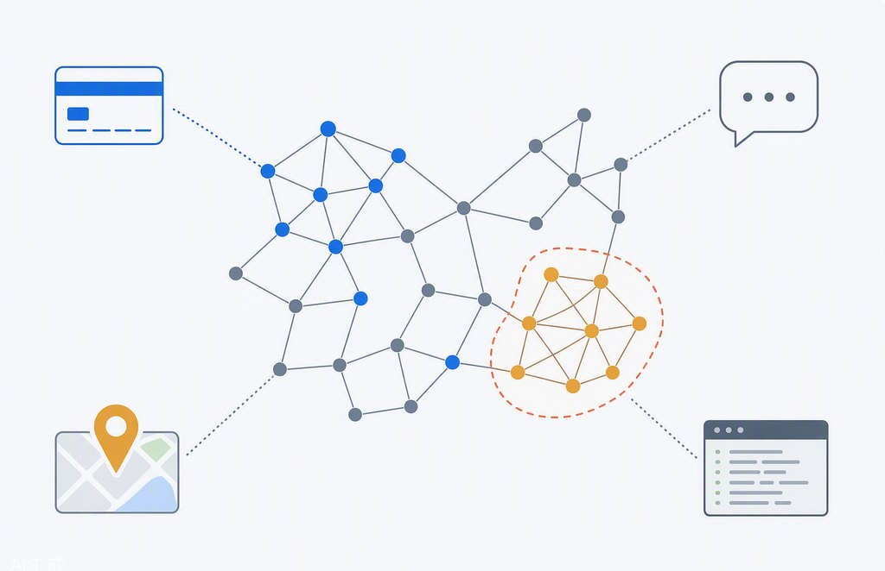
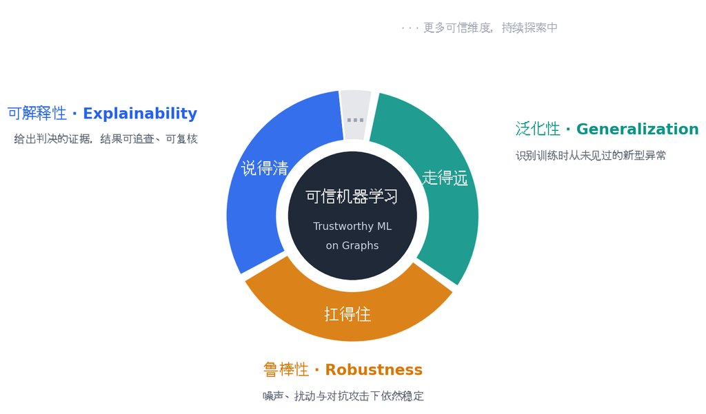
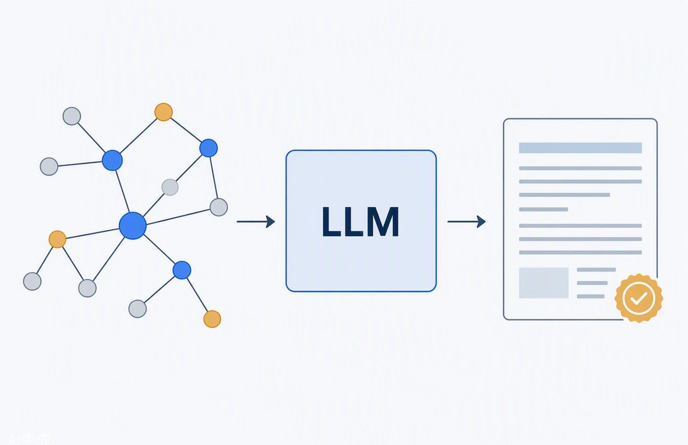
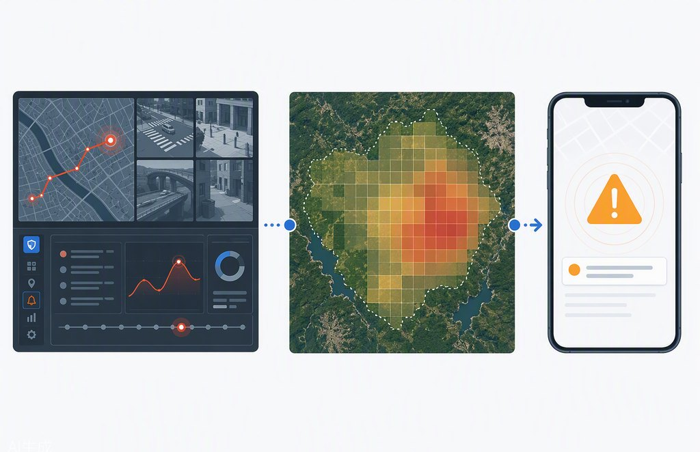

研究方向
以图数据挖掘为核心，以可信机器学习为准则，以大模型为推理引擎，在安全与时空场景中落地——四个方向环环相扣，点击进入详情页。

图数据挖掘
从转账记录里找出诈骗团伙、从转发路径里识别谣言——转账、社交、日志、轨迹都是“图”。我们研究图的表示、异常检测、传播预测与社区发现，让机器真正读得懂现实世界的关系与演化。
进入方向页 →
可信机器学习
AI 判定你的账户异常，凭什么？我们让图上的模型“说得清、扛得住、走得远”：给出证据（可解释）、不怕干扰与攻击（鲁棒）、认得出没见过的新骗局（泛化）。
进入方向页 →
大模型×图
以大模型为推理引擎、以图为知识与证据的载体：LLM 图推理、知识图谱增强（RAG）、异常归因与多智能体协作，让 LLM 真正“读懂”图。
进入方向页 →
安全与时空应用
96110 反诈预警、揪出潜入内网的黑客、提前一周预测野火——我们把方法落到网络安全、金融安全、应急管理与时空预测的真实问题上。
进入方向页 →代表性论文
实验室2022 年以来主要论文，按发表时间倒序排列。
科研项目
主持及参与国家级、省部级与企业合作项目 20 余项。
| 项目 | 来源 | 角色 |
|---|---|---|
| 动态图异常检测的稳定性与可解释性研究 | 国家自然科学基金（面上） | 负责人 |
| 应急指挥调度情报资源管理与应用技术研究——多灾种情报研判分析及印证模型研究 | 应急管理部重点科技计划 | 课题负责人 |
| 基于迁移学习的社交网络虚假新闻检测关键技术研究 | 国家自然科学基金（青年） | 负责人 |
| 电信诈骗领域专业词库 | 南京华飞数据技术有限公司 | 负责人 |
| 电力物联网关程序多样化异构方法研究 | 全球能源互联网研究院 | 负责人 |
团队成员
当前在读学生及其课题方向（信息持续更新）。
| 成员 | 课题方向 |
|---|---|
| 张雅薇 | 异常团伙检测 · 设备指纹认证（安全应用） |
| 龚方南 | 大模型×知识图谱×POI 推荐（大模型×图）／应急情报研判（安全应用） |
| 董崇未 | 大模型×时空数据 · 野火预测（大模型×图 + 时空应用） |
| 王艺博 | 大模型×时空数据 · 模型蒸馏 |
| 颜琪琪 | 异常团伙检测 |
| 付勋 | 聚类算法 |
导师介绍
课题组负责人。
方兰婷
个人简介
方兰婷，北京理工大学计算机学院副教授。主要研究方向为 Graph Data Mining · Trustworthy ML（Explainability & Robustness）· LLMs for Graphs。主持国家自然科学基金面上项目、青年项目及应急管理部重点科技计划课题等，主持或参与国家级、省部级及企业合作项目 20 余项。
工作经历
- 2019.1–2023.4：东南大学网络空间安全学院，讲师
- 2023.5–2024.4：东南大学网络空间安全学院，副教授
- 2024.5 至今：北京理工大学计算机学院，副教授
学术服务
受邀担任 NeurIPS、ICLR、AAAI、TKDE、《计算机学报》等顶级会议与期刊的程序委员会委员或审稿人。
招生
每年计划招收博士（卓工）、硕士研究生 3 人左右，同时欢迎优秀本科生加入实验室。有意向的同学请将简历发送至 ltfang@bit.edu.cn。
加入我们
每年计划招收博士（卓工）、硕士研究生 3 人左右，同时欢迎优秀本科生加入实验室。
我们寻找这样的你
- 对图数据挖掘、可信机器学习、大模型×图有热情
- 扎实的数学或编程基础，乐于动手实验
- 愿意挑战动态图异常检测、可解释性与 LLM 推理等前沿问题
你将获得
- 从基础学习到前沿课题的完整培养路径，课题可与导师共同细化
- 参与国家级、省部级及企业合作项目的真实数据与真实问题
- 以高水平论文（VLDB、TKDE 等）为目标的系统科研训练
申请方式
- 请将个人简历发送至：ltfang@bit.edu.cn
- 邮件主题建议注明：保研/考研/申请博士 + 学校 + 姓名
- 附上成绩单、科研或项目经历（如有论文/代码更佳）